Preserves the black-and-white design, curriculum, grading, SQL execution and saved-work model. Open the working preview.
Before: the existing local build on port 3232. After: the corrected development app on port 3040. Both are actual browser captures at 1440 × 900. Completed workspace captures show SQL that was run and checked during verification.
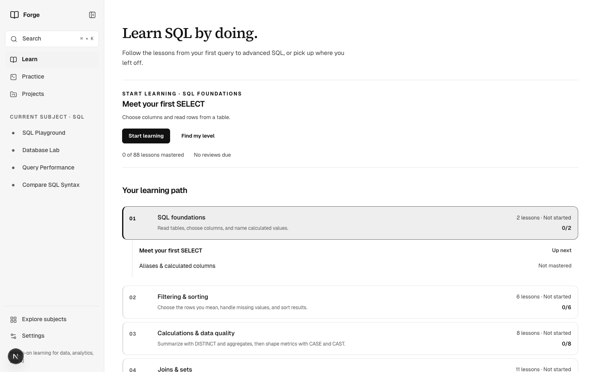
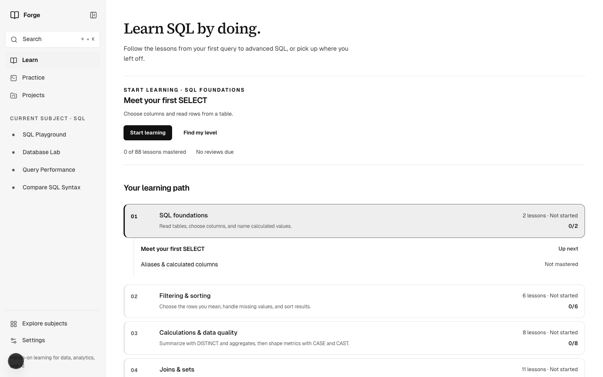
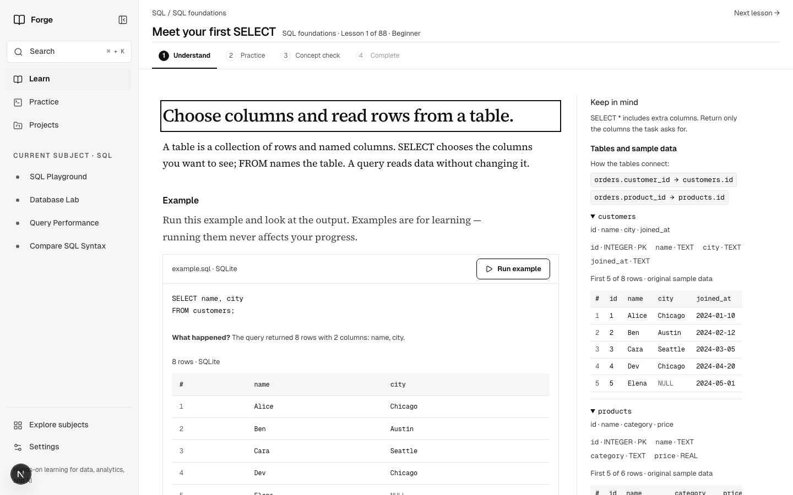
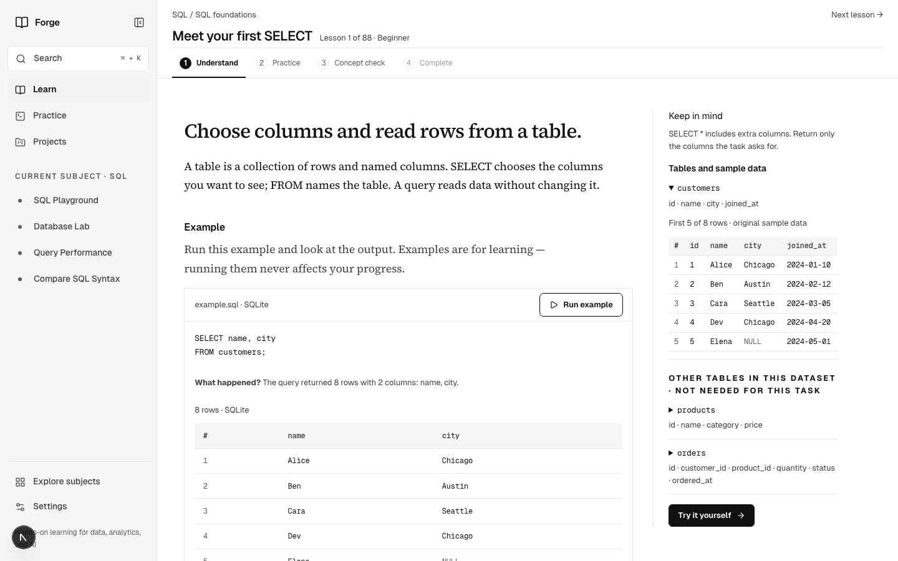
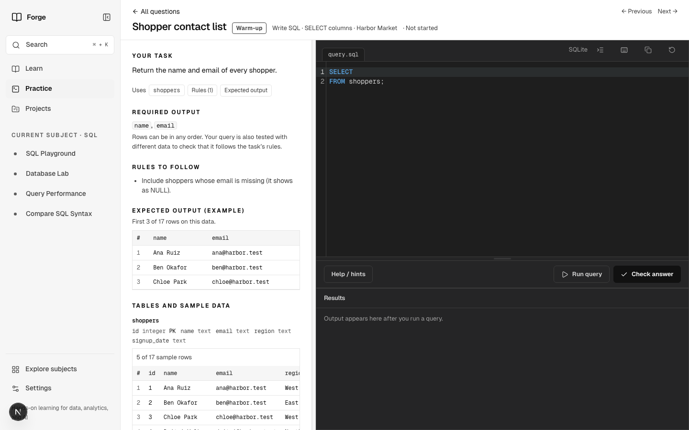
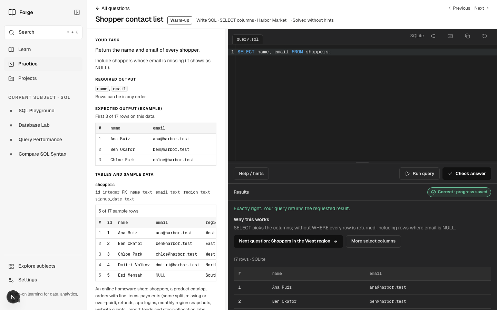
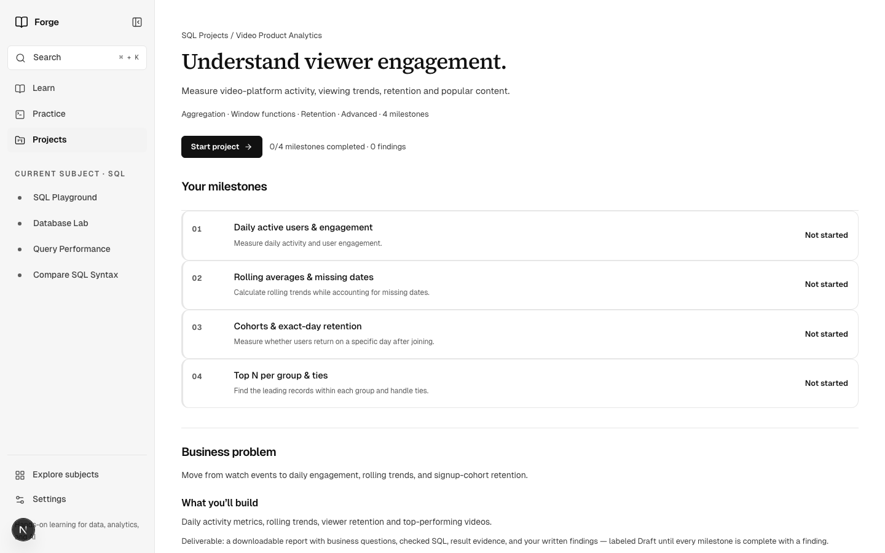
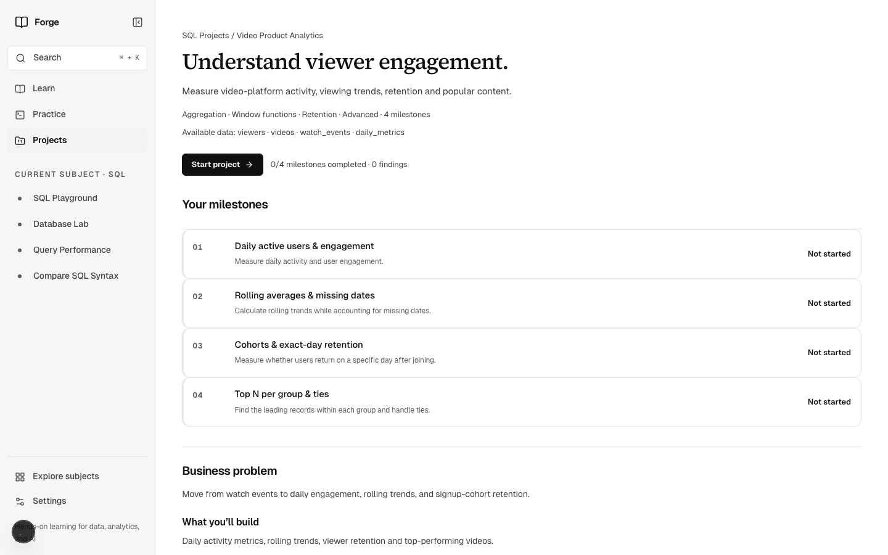
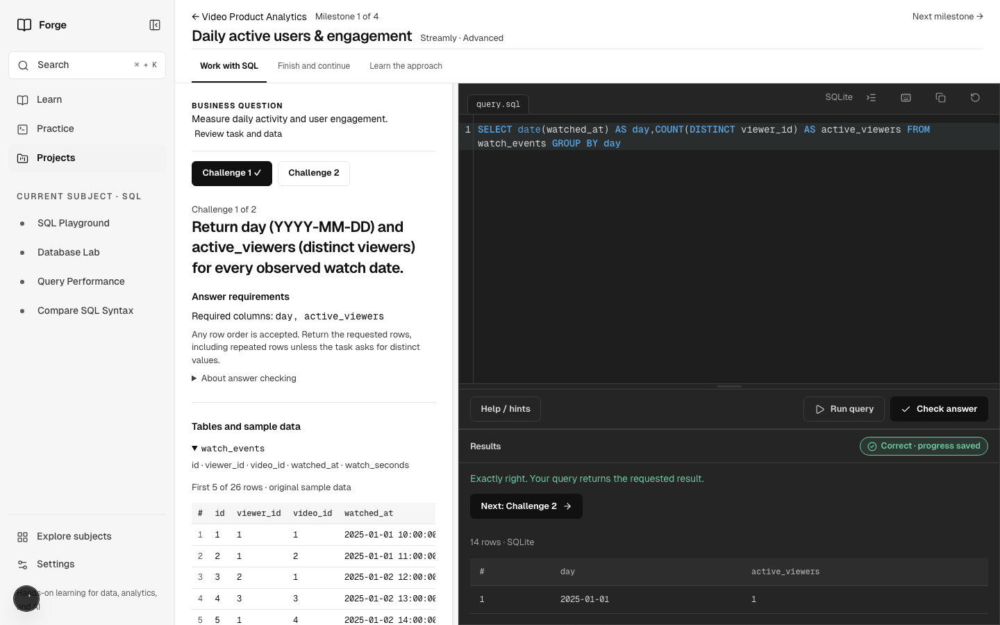
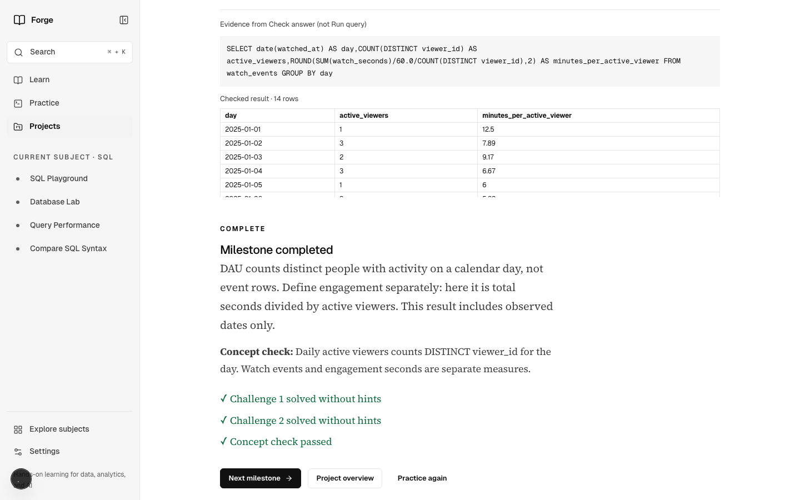
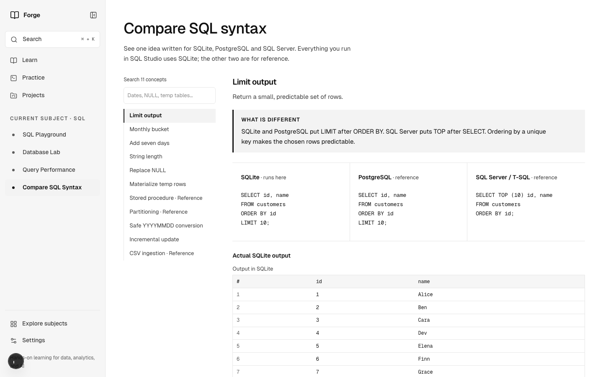
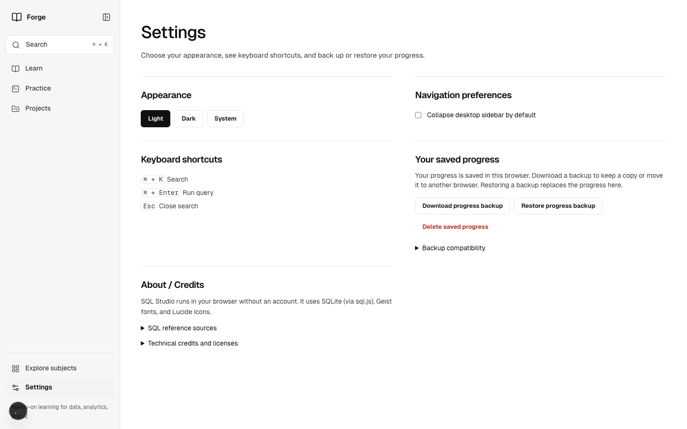
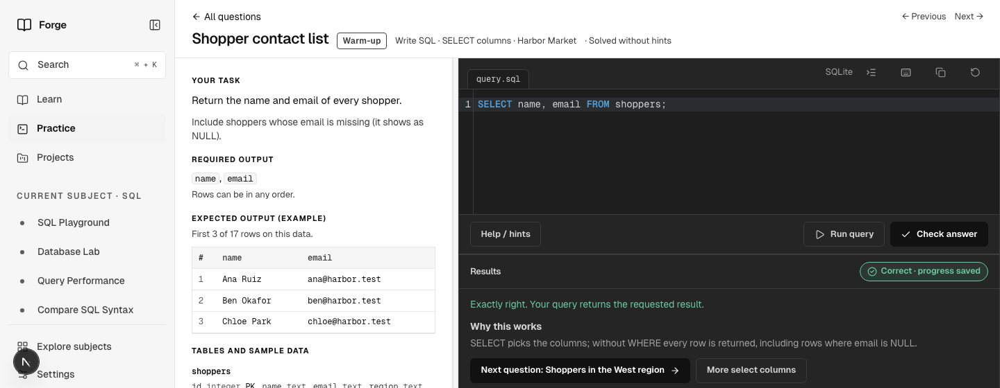
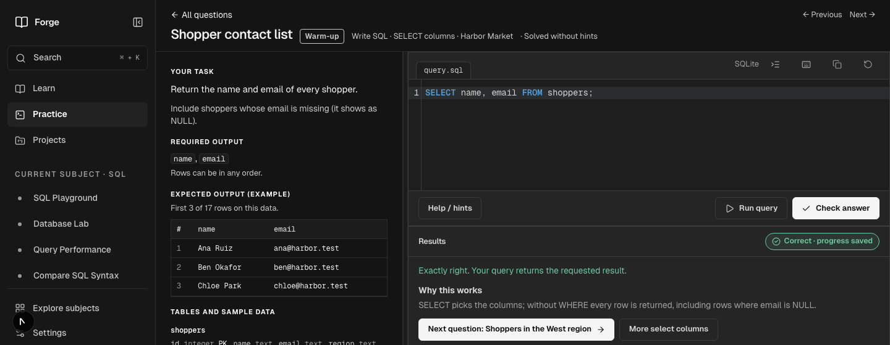
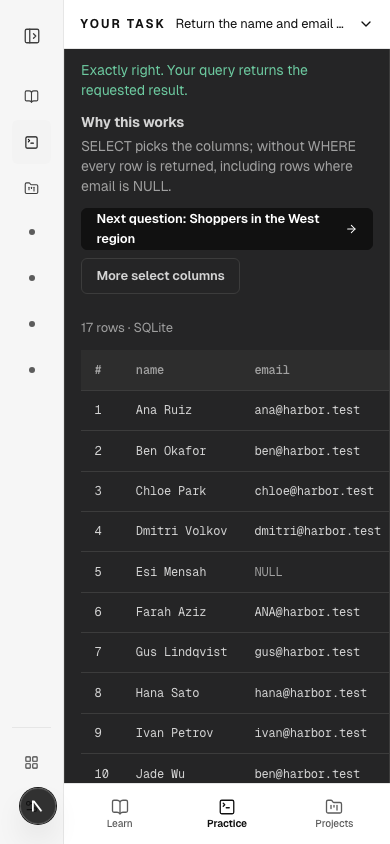
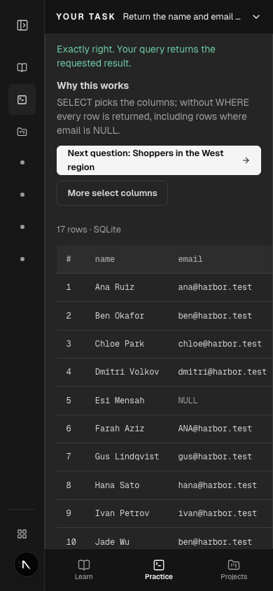
Interaction checks · Accessibility checks · Production build · Audit notes and limitations